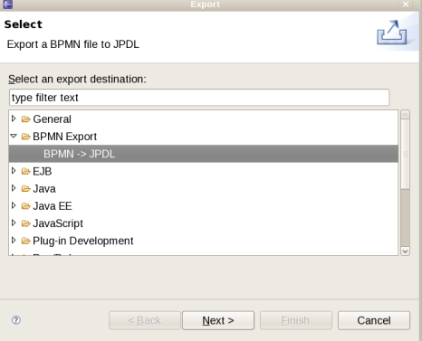
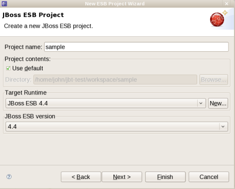

ESB
We added an export wizard that converts BPMN diagrams defined using the Eclipse SOA Tools Platform (STP) BPMN editor and produces jPDL that can be executed with the JBoss jBPM process engine.

We added a project wizard for JBoss ESB development, including integrated deployment.

We added additional wizard support for providers, listeners, and actions in the JBoss ESB configuration file editor.